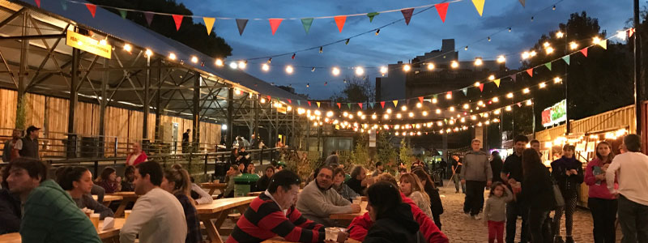

Donde Comer
En este buscador, vas a poder filtrar por nombre, tipo de establecimiento y por barrio
ver masEn este buscador, vas a poder filtrar por nombre, tipo de establecimiento y por barrio
ver masEn Buenos Aires vas a encontrar plastos típicos y comida de todo el mundo
ver mas
Conocé los patios y mercados en donde podés disfrutar de la mejor gastronomía de la ciudad
ver mas